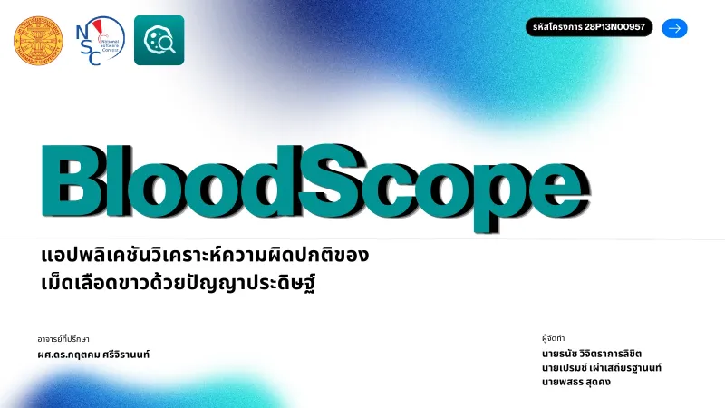
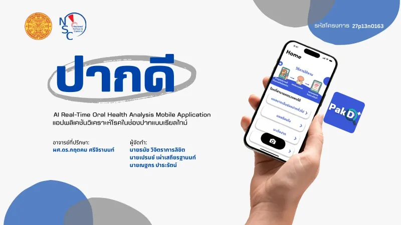
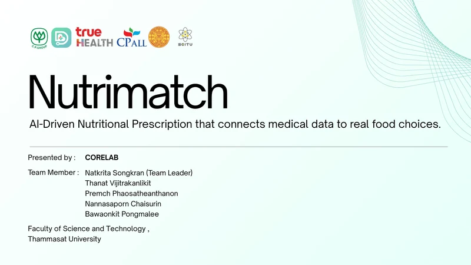
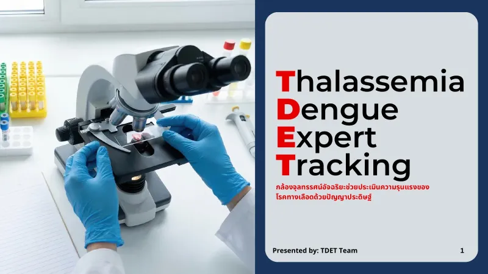
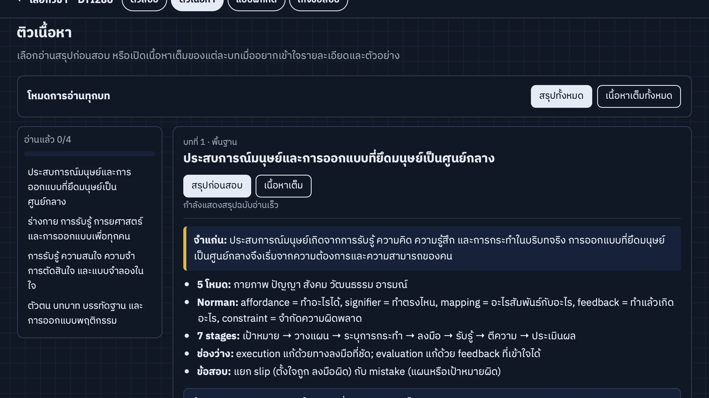

NSC 2026 · National Finalist · Healthcare AI
BloodScope
แอป iOS วิเคราะห์และจำแนกเม็ดเลือดขาว 13 ชนิดด้วย AI ประมวลผลบนอุปกรณ์ ผ่านเข้าสู่ NSC 2026 รอบชิงชนะเลิศระดับประเทศ
- mAP50
- 86.04%
- Images
- 17,767
- Classes
- 13
Data Science · AI/ML · Software
ผม ธนัช วิจิตราการลิขิต นักศึกษาคณะวิทยาศาสตร์และเทคโนโลยี สาขาวิชาเทคโนโลยีและนวัตกรรมดิจิทัล มหาวิทยาลัยธรรมศาสตร์ ศูนย์ลำปาง สนใจทำงานด้าน Data Science และการพัฒนา AI/ML โดยเน้นการวิเคราะห์ข้อมูล การสร้างโมเดล และการนำผลลัพธ์ไปใช้แก้ปัญหาจริง
เปิดรับโอกาสฝึกงานและโครงการด้าน Data / AI / Software
NSC 2026 · National Finalist · Healthcare AI
แอป iOS วิเคราะห์และจำแนกเม็ดเลือดขาว 13 ชนิดด้วย AI ประมวลผลบนอุปกรณ์ ผ่านเข้าสู่ NSC 2026 รอบชิงชนะเลิศระดับประเทศ
Competition projects
รวมผลงานจาก NSC, CP CUP และ KU MedAI โดยระบุสถานะตามจริงว่าเป็นระบบที่พัฒนาและทดสอบแล้ว หรือเป็นแนวคิดสำหรับการนำเสนอ

แอป iOS จำแนกเม็ดเลือดขาว 13 ชนิดด้วย AI ประมวลผลบนอุปกรณ์ ผ่านเข้ารอบชิงชนะเลิศระดับประเทศ

แอปประเมินโรคในช่องปากเบื้องต้นแบบเรียลไทม์ เปรียบเทียบ 3 โมเดลและพัฒนาแอป Flutter ได้รับทุนสนับสนุนในรอบภูมิภาค

แนวคิด AI Nutritionist ที่เชื่อมข้อมูลสุขภาพกับแผนอาหาร พร้อม EDA และ financial model โดยไม่ได้พัฒนาเป็นซอฟต์แวร์

แนวคิดกล้องจุลทรรศน์อัจฉริยะสำหรับคัดกรองความรุนแรงของธาลัสซีเมียและไข้เลือดออก โดยไม่ได้พัฒนาโมเดลหรือแอปจริง
How the flagship was built
ตัวอย่างขั้นตอนการทำงานจากโครงการ BloodScope ตั้งแต่ข้อมูลดิบจนถึงแอปบนอุปกรณ์จริง
รวบรวมภาพจาก 4 แหล่ง แล้ว re-annotate ให้ตรงกันเป็น 13 คลาส
17,767 imagesฝึกโมเดล YOLO26n ด้วย degradation augmentation, repeat-factor sampling และ Equalized Quality Focal Loss
YOLO26nทดสอบบนชุดทดสอบ 13 คลาส และบนภาพจริงจากโรงพยาบาล
86.04% mAP50 · 80.87% on real imagesนำโมเดล CoreML ไปใช้ในแอป Flutter บน iPhone ประมวลผลบนอุปกรณ์ ไม่ส่งภาพขึ้น Cloud
CoreML · Flutter · on-devicePakD ใช้แนวทางเดียวกันกับโจทย์อื่น: เปรียบเทียบ 3 โมเดล (EfficientNetV2-S, MobileNetV3, YOLOv12n) แล้วเลือก EfficientNetV2-S ที่ Macro F1 0.7629 อ่านต่อใน PakD case study
Personal projects
ผลงานที่พัฒนานอกการแข่งขัน เพื่อทดลองเทคโนโลยีและสร้างประสบการณ์ที่ผู้ใช้เปิดใช้งานได้จริง
Not competition entries

แพลตฟอร์มติวสอบที่รวมเนื้อหา แบบฝึกหัด เก็งข้อสอบ คำศัพท์ และการส่งออก PDF ของ DTI286 กับ PB287 ไว้ในเว็บเดียว
Try the live demoToolbox
ผมชอบงานที่ต้องทำความเข้าใจปัญหาให้ชัดก่อนลงมือพัฒนา และมองผลลัพธ์ตั้งแต่ข้อมูล โมเดล ไปจนถึงประสบการณ์ของผู้ใช้
Contact
ยินดีพูดคุยเกี่ยวกับโอกาสฝึกงาน งานด้าน Data Science, Data Analytics และ AI/ML รวมถึงการร่วมพัฒนาโครงการซอฟต์แวร์